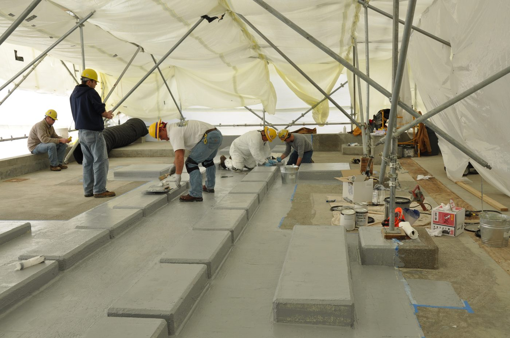
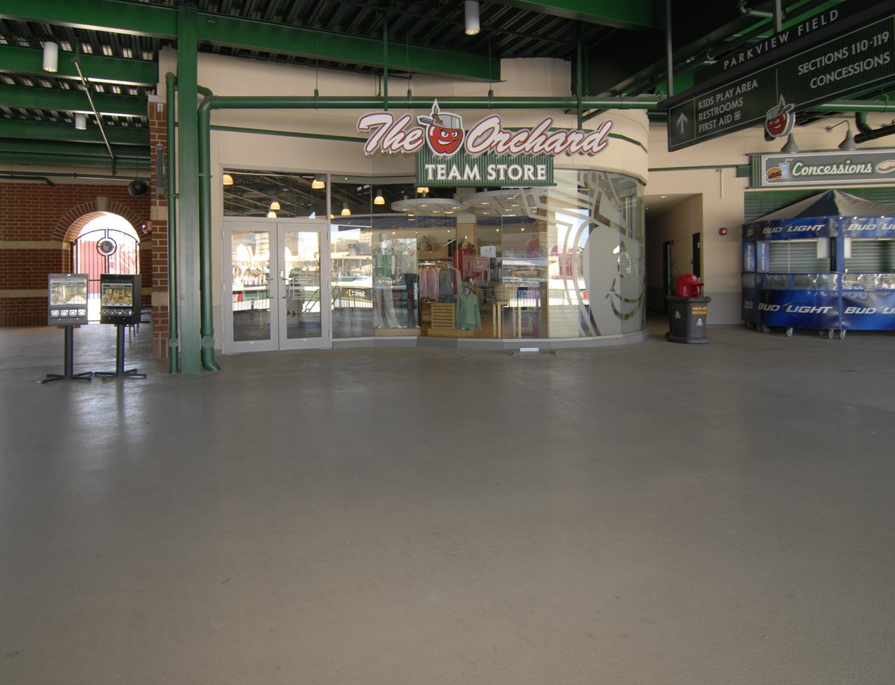

Garage floor epoxy
Solid colour or flake systems for home garages. Good for oil resistance and everyday cleaning.
Garage floors, workshops and light commercial slabs around Campbelltown, Camden, Narellan, Oran Park and the Liverpool fringe.
This is a local enquiry page. Fill in the form and — with your consent — we’ll pass your details to a local epoxy installer for a quote. We’re not the contractor.
Residential and light commercial epoxy work across the Macarthur area.
Solid colour or flake systems for home garages. Good for oil resistance and everyday cleaning.
Hard-wearing coatings for sheds, workshops and light industrial slabs.

Outdoor options depend on UV and slip needs. Flag patio / outdoor on the form so the installer can advise.

Multi-flake blends that hide dust and tyre marks — common in newer Macarthur estate garages.
Photos above are stock examples only. They’re not photos of Campbelltown jobs.
Campbelltown, Bradbury, Leumeah, St Helens Park, Macarthur, Camden, Narellan, Oran Park, Gregory Hills, Minto, Ingleburn and the Liverpool fringe.
South-west Sydney slabs cop heat, dust and vehicle traffic. A proper epoxy job usually means moisture checks, grinding or shot-blast prep, and a system that suits how you use the floor — not a thin DIY roller coat.
No. This website is a local enquiry page. With your consent, your contact details may be passed to a local epoxy flooring installer who can quote and do the work.
Depends on square metres, prep, moisture, and solid coat vs flake. Send an enquiry with your suburb and approx. size for a local quote — we don’t publish fixed prices here.
Yes — Camden, Narellan, Oran Park and the Liverpool fringe as well as Campbelltown / Macarthur. The installer confirms coverage for your address.
Some systems handle covered outdoor areas better than others. UV and slip matter. Mark patio / outdoor on the form so the installer can recommend a suitable product.
We only use your details to respond to your enquiry. If you tick consent, those details may be shared with a local installer for quoting. See the privacy note in the footer.
Campbelltown, Macarthur, Camden & Liverpool fringe. Takes about a minute.